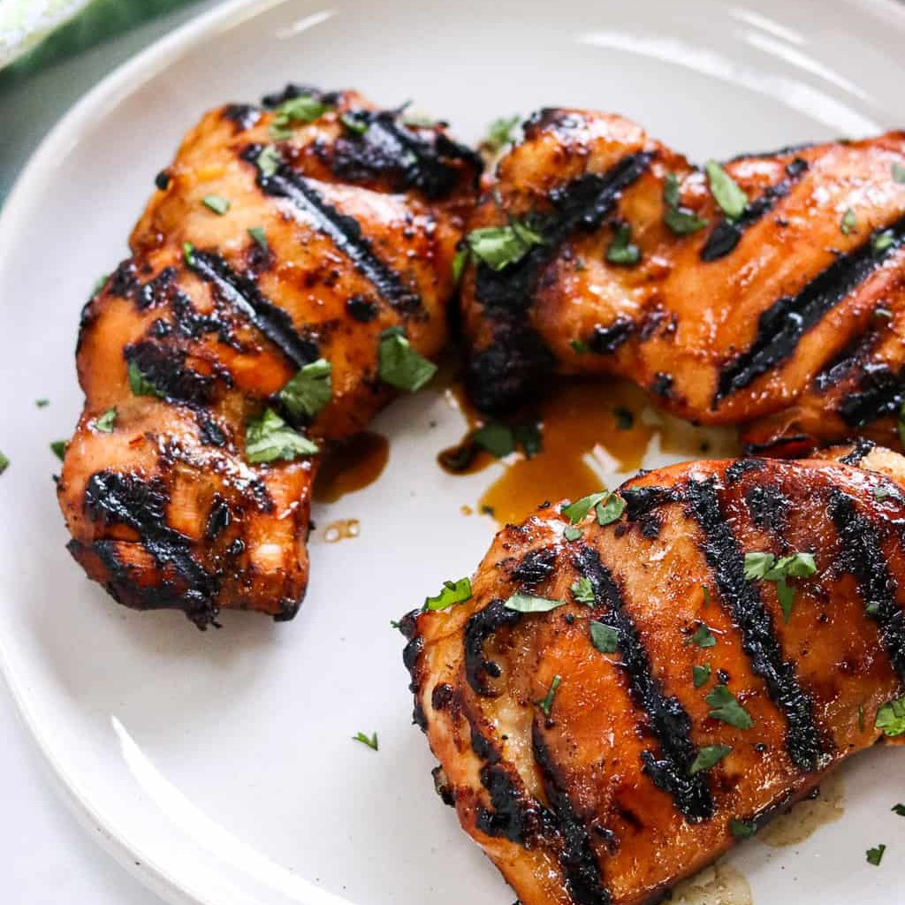

Mexican Chicken and Rice Recipe

Asian marinated chicken is a dish that is known for its bold flavors and succulent texture.
The quality of this dish depends on the quality of ingredients used in the marinade and the
cooking technique. The chicken should be fresh and of good quality, and the marinade should
be made with fresh herbs, spices, and sauces that are traditional to Asian cuisine. The marinade
should be allowed to penetrate the chicken for a few hours, so that the flavors can fully infuse
the meat. When cooked properly, the chicken should be moist, tender, and packed with flavor.
One of the best qualities of Asian marinated chicken is its versatility. The dish can be served
in many different ways, such as in a stir-fry with vegetables, over a bed of rice, or on a salad.
The marinade can also be used on other meats, such as pork or beef, to create a variety of different
dishes. Additionally, the flavors of the marinade can be adjusted to suit different tastes, with
variations such as spicy, sweet, or tangy. Overall, Asian marinated chicken is a delicious and
versatile dish that can be enjoyed by anyone who loves bold flavors and exciting cuisine.
Ingredients
3 Chicken thighs
Juice of 1 lemon
1 Tbsp oyster sauce
1/4 cup soy sauce
3 Garlic cloves
1/4 Tsp salt
1 Tbsp onion powder
1/4 Tsp pepper
Steps
- Pat chicken thighs dry, place in a sealable bowl.
- Put liquids in the bowl, hand stir.
- Put dry seasonings, hand stir.
- Close the bowl and refrigerate.
- Marinate for atleast 2 hrs, but no more than 48 hours
- Grill or pan fry and enjoy.